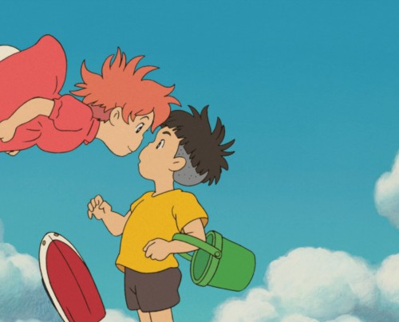

Challenges
In lab 12, we are challenged to create the proper folders and files for css and index.html. We are also challenged to float and center images and texts to place either the right, the left, or center of the page.
Difficulties
The Difficulties that I had were mostly regarding float because whenever I wanted to float text to ther right, It would only float the header but not the text. So what I did to resolve that issue is i have searched up how to float text. The coding for floating text is a bit different because it states how its better to use text-align rather than actual float. I tried that and that resulted in both my header and text floating to the right which is what I wanted. I aslo had difficulties with floating images as well because when ever I would either center it or move it to the right or left, it would float outside of the white background. So what I did with that issue is move my image coding up top in order for it to display inside the white background.
Results
The results for this lab came out nice and neat. I would say it took me a bit longer that the other two previous labs because it dealt new content. I did struggle with the centering and floating but I asked my partner for help and guidence and I also went to w3schools to research a bit more about floating and centering since I was having difficulties with it. I managed to get the header and text to align to the right while the images to float right, left, and center. Overall, I enjoyed this lab because I was able to learn from my struggles and also learn more about centering and floating.